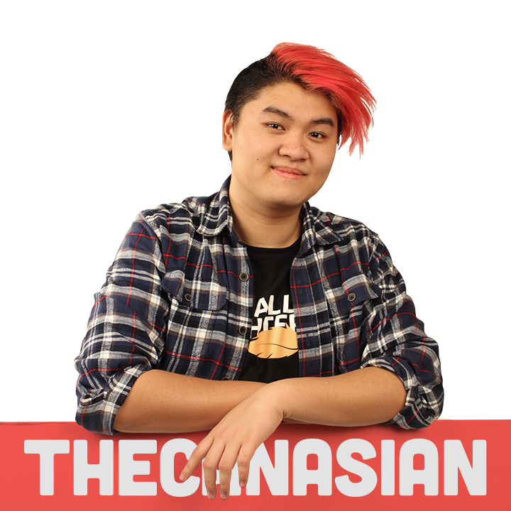

About Me
Howdy doo there partner! The names Derick Dinh, Better known as TheCanasian. graphic design extrordinaire and fun lovin'/havin' guy. FOREWARNING I'm a pretty big geek, like still collecting G.I Joes at 20 kind of geek. Video games play a huge role in my creative outlook. I've taken my passion for streaming on twitch and design by combining both at the same time!
WOAH! LIVE DESIGNS!I love to take the time to look at every creative aspect when I involve myself with video games. My focus in work is branding, specifically E-sports branding. With the rise of E-sports culture, how you look is everything, you may be skilled, but you need the brand to match your skill! and *wink wink* I'm that guy
derickdinh.design@gmail.com